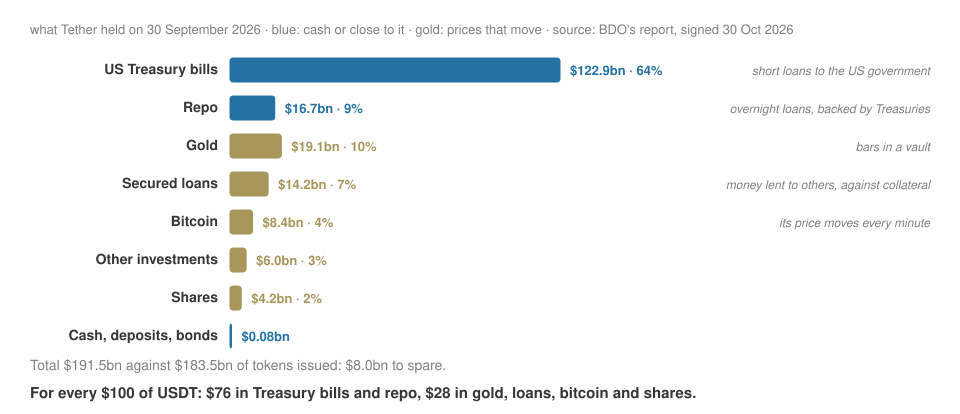
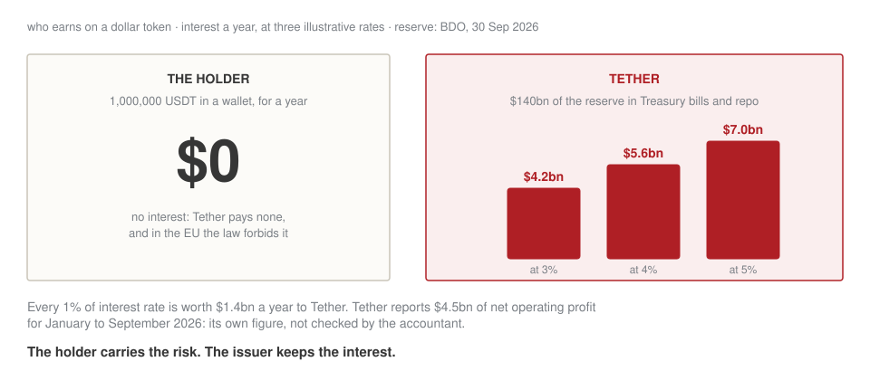
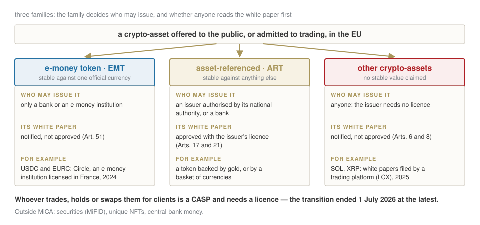

How a stablecoin works, and an AI that reads it
Week 7 · Thursday 19 November 2026 · 15:00–17:00 · make-up
AI for Business and FinTech · European School of Economics, Florence
Where we are
| 1–5 | 23 Sep – 4 Nov | a model’s release · tokens · look first · read first · agents and harnesses ✓ |
| Mid + 6 | Wed 18 Nov | the oral · the crypto world, simply · stablecoins · the capstone ✓ |
| 7 | Thu 19 Nov · 15:00 | how a stablecoin works · the AI that reads |
| 8 | Wed 25 Nov | USDT on the chain · the AI that looks |
| 9 | Thu 26 Nov · 15:00 | an agent that pays in USDT · the AI that acts |
| 10 | Wed 2 Dec | capstone studio |
| Rev. | Wed 9 Dec | final presentation |
Today: how one USDT is born and dies, what Tether says about its reserve, and an AI that reads the report for you.
Last session, in one slide
The ledger is a page everyone keeps a copy of; each block carries the fingerprint of the one before. A wallet holds a key, not coins.
A pool sets prices by a rule, x \cdot y = k. A loan with no banker: the collateral is the credit check.
A stablecoin: a company takes your dollar, keeps it in a reserve, and writes a token on the ledger.
Tether’s USDT is six of every ten dollar tokens: $175bn. It is our case until the end of the course.
Three verbs for AI on one coin: it reads, it looks, it acts. Today it reads.
Today
| 15:00 | where we are |
| 15:05 | how a stablecoin works: mint, reserve, redeem, the interest, the price |
| 15:35 | Tether: the sentence, the fine, the company today |
| 15:50 | lab: an AI reads Tether’s reserve report, after you have |
| 16:40 | MiCA in one picture: why USDT is not on European exchanges |
| 16:55 | three lines |
Part 1 How a stablecoin works
From a dollar to a token, and back
What is in the reserve

How the issuer makes money
The holder of a USDT earns nothing. The reserve behind it earns interest, and the interest is Tether’s.

Why the price can slip
Only verified customers can hand USDT back to Tether. Everyone else sells it on an exchange, to whoever is buying.
On a normal day the gap is a fraction of a cent: if USDT trades below a dollar, a customer buys it cheap and redeems it at par, and the price comes back. On a bad day, more people want out than the customers can absorb.

Two stablecoins, two ways of doing it
| USDT · Tether | USDC · Circle | |
|---|---|---|
| in circulation | $175bn | $69bn |
| the reserve | Treasury bills and repo, plus gold, bitcoin and secured loans | cash in banks and a Treasury fund run by BlackRock |
| the report | quarterly, checked by BDO | monthly, checked by Deloitte |
| in the EU | not authorised under MiCA | authorised: an e-money licence in France |
| can it freeze a wallet? | yes | yes |
Same promise, one dollar for one token. Different reserve, different paperwork, different regulator. Sources: DefiLlama, 16 Nov 2026; the issuers’ reports.
Part 2 Tether: the sentence and the documents
“Fully backed”
For years Tether’s website said that every USDT was backed one to one by dollars in its bank accounts.
In October 2021 the US CFTC fined Tether $41 million. Over 26 months, 2016 to 2018, Tether had held enough dollars to back every token in circulation on only 27.6% of the days; the rest of the time it leaned on unsecured receivables and assets that were not dollars. It settled without admitting or denying.
The claim was one sentence anyone could read. The evidence was in documents nobody outside could read. Today the documents are public, and checking one against the other is a job for a model that reads.
The company behind the sentence
Tether today. About $186bn of USDT in circulation at the end of 2025, and over $10bn of net profit that year.
The man behind it, Giancarlo Devasini, is Italian. Forbes estimates he owns about 45% of Tether and counts him the richest person in Italy; Tether does not publish who owns it.
It already held over 10% of Juventus when, in December 2025, it offered to buy Exor’s 65%. Exor said no.
Where the profit goes: AI.
- QVAC, its own AI platform: an open-source toolkit, April 2026, for apps that run models on your phone or laptop, offline, with nothing sent to a data centre.
- Blackrock Neurotech, brain-computer interfaces: a majority stake.
- GPUs for AI, through Northern Data and Rumble.
A stablecoin earns the interest on its reserve. Tether spends part of it betting that AI will run locally, on open models: session 5’s map, from the last company you would expect.
What Tether publishes, and what it does not
| it publishes | what it is |
|---|---|
| a reserve report, every quarter | an accountant (BDO) checks the reserve on one day and signs: a photograph, not a film |
| the transparency page | the total issued and the total held, updated often, checked by nobody |
| its terms and fees | who may mint and redeem, at what fee, and when Tether may refuse or freeze |
| it does not publish | why it matters |
|---|---|
| who owns it | the estimates come from Forbes, not from Tether |
| a checked profit | the profit in its press releases is its own figure: the accountant checks the reserve, not the profit |
BDO’s report adds one line: Tether’s 2025 accounts were audited, and approved on 13 August 2026.
Part 3 Lab: an AI reads Tether
Two documents, one notebook
LAB · Gemini Notebook · fifty minutes
- Tether’s latest reserve report: BDO’s PDF on 30 September 2026, eleven pages.
- Tether’s fees page: who may mint and redeem, from how much, at what fee.
One notebook, these two sources and nothing else. Both are public and free.
The same work a compliance analyst does on a stablecoin every quarter. Week 4’s method: you answer first, the model second.
First, your answers
LAB · your sheet · fifteen minutes · no AI
Eight facts, found by hand, each with its page:
the date of the report · who signed it · total assets · USDT issued · the excess reserve · the share in Treasury bills · what is not cash or bills · the minimum you can redeem
Columns: fact · your answer · page · the notebook’s answer · its page · hit or miss · which kind.
Then the notebook, and three traps
LAB · twenty-five minutes
Ask the notebook the same eight, one at a time, and fill the sheet. Then three questions written to trip it:
- A promise the documents do not make. Ask whether USDT is backed only by dollars.
- A number inside a table. A figure that appears only in one cell of the report.
- A claim from the website. Paste one sentence from Tether’s home page and ask which line of the report supports it.
What you see is not what the model reads
Name every miss
LAB · the sheet · one word per miss
| the miss | what you saw |
|---|---|
| retrieval | the right passage never came back |
| generation | it came back, and the answer is still wrong |
| memory | an answer with no passage behind it |
| rule broken | a line in the document overrode your instruction |
Then the score: hits out of eight, and the minutes it took you against the minutes it took the notebook.
The model reads every line with the same trust. You must not.
A person skims, doubts and notices that a page looks odd. A model reads a footnote and a signature with the same weight. The answers you wrote first are the only thing that can tell them apart.
Part 4 MiCA in one picture
Three families of crypto-asset

Stablecoins in the EU: one licence, one delisting
- A euro or dollar token (an EMT) can come only from a bank or an e-money institution. Holders can redeem it at par, at any time, without a fee, and the issuer may pay them no interest.
- Circle got an e-money licence in France, announced 1 July 2024, and issues USDC and EURC under MiCA.
- USDT is not authorised. Coinbase restricted it for EEA users by 30 December 2024; Kraken, Binance and Crypto.com removed it in February and March 2025. Holding USDT is not banned: offering it on an EU platform is.
The largest stablecoin in the world, off European exchanges for want of a licence. In this market the documents are the product, and the missing one is the product too.
Close
The claim checker from today is a capstone shape: a stablecoin’s claims against its own report, every quarter, with the test written first.
Three lines at the bottom of your sheet: how a USDT is born and dies, where Tether’s profit comes from, and the miss that surprised you.
Next: Wednesday 25 November. Where USDT goes on the chain, and an AI that follows it. Bring your three capstone ideas.
AI for Business & FinTech · ESE Florence